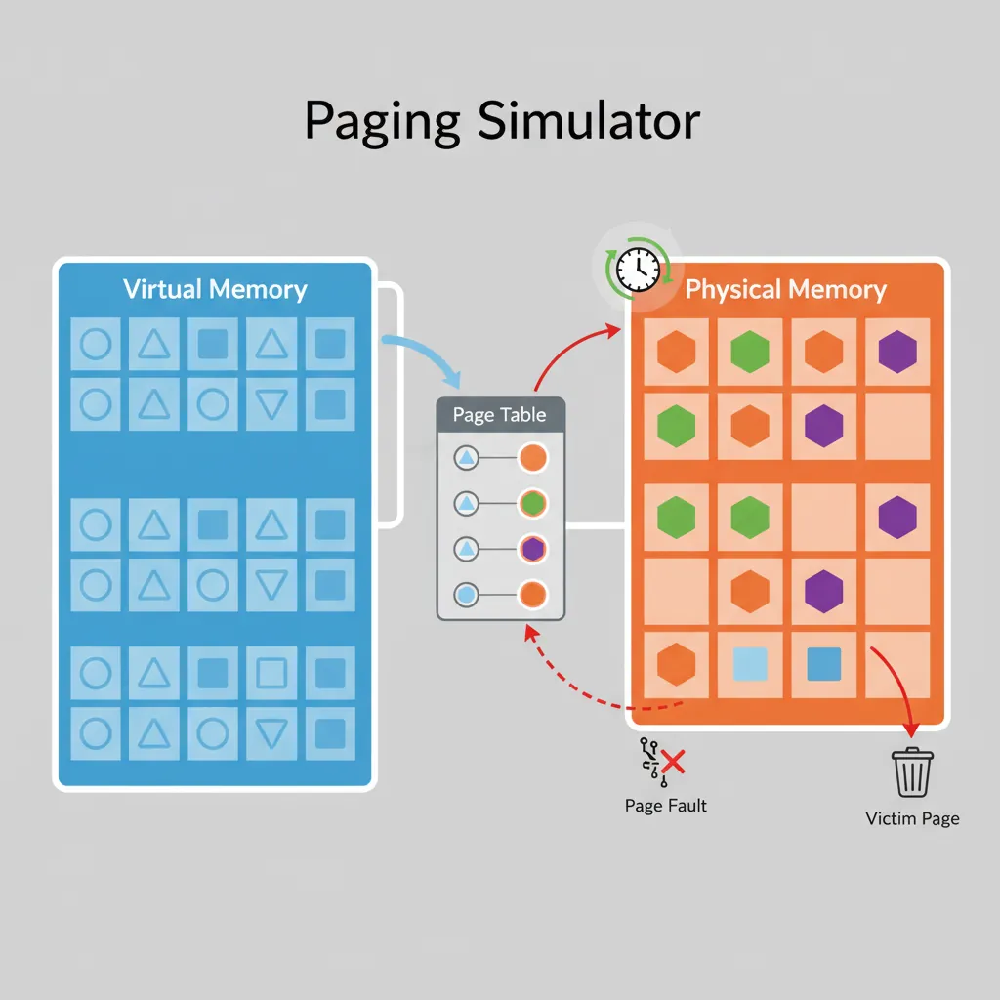
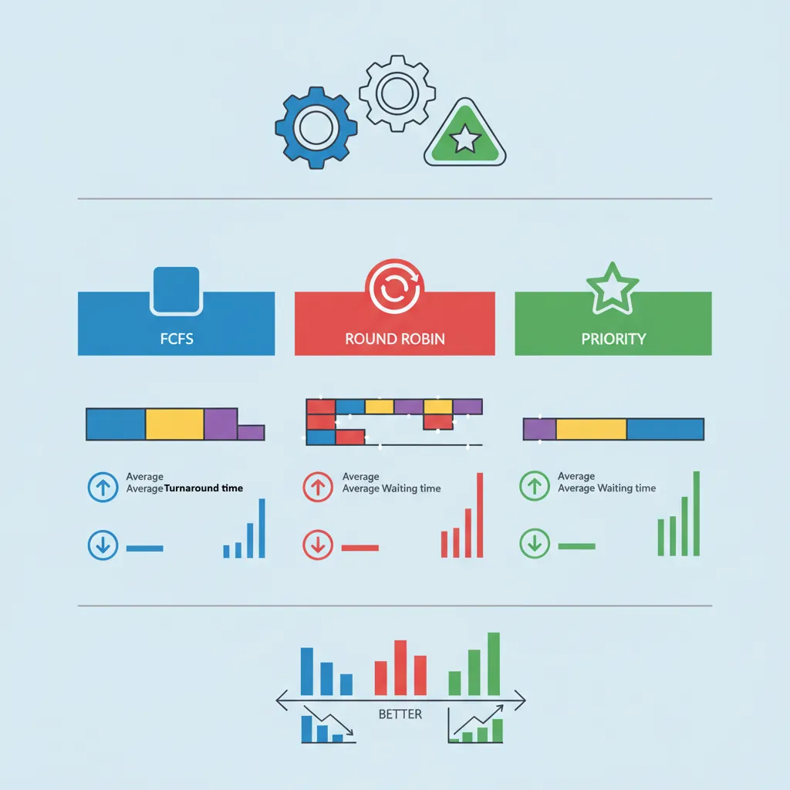
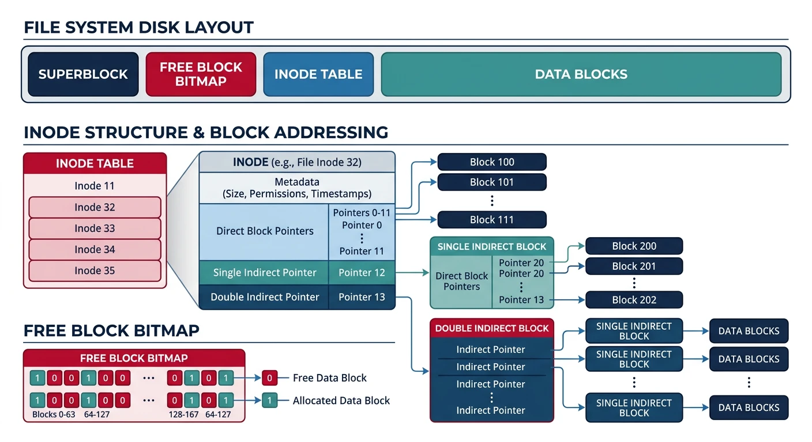

The best way to solidify your understanding of operating systems is to build OS components yourself. These capstone projects will challenge you to apply concepts from the entire series.
Series Context: This is Part 24 of 24—the final chapter of the Computer Architecture & Operating Systems Mastery series. We bring everything together through hands-on projects.
Simulate virtual memory with page tables and replacement algorithms.

Paging simulator: virtual pages map to physical frames through a page table, with clock algorithm selecting victim pages on faults
// Paging Simulator - Core structure
#include <stdio.h>
#include <stdlib.h>
#define NUM_PAGES 256
#define NUM_FRAMES 64
typedef struct {
int valid;
int frame_number;
int referenced;
int modified;
} page_table_entry_t;
typedef struct {
int page_number;
int loaded;
} frame_t;
page_table_entry_t page_table[NUM_PAGES];
frame_t physical_memory[NUM_FRAMES];
int page_faults = 0;
int clock_hand = 0; // For CLOCK algorithm
int clock_replace() {
while (1) {
if (!page_table[physical_memory[clock_hand].page_number].referenced) {
int victim = clock_hand;
clock_hand = (clock_hand + 1) % NUM_FRAMES;
return victim;
}
page_table[physical_memory[clock_hand].page_number].referenced = 0;
clock_hand = (clock_hand + 1) % NUM_FRAMES;
}
}
void access_page(int page_number) {
if (!page_table[page_number].valid) {
page_faults++;
int frame = clock_replace();
// Evict old page, load new page...
page_table[page_number].valid = 1;
page_table[page_number].frame_number = frame;
}
page_table[page_number].referenced = 1;
}
Project 4: CPU Scheduler
Simulate different scheduling algorithms and compare their performance.

CPU scheduler simulation: comparing FCFS, Round Robin, and Priority algorithms through Gantt charts and performance metrics
// Scheduler Simulator
typedef struct {
int pid;
int arrival_time;
int burst_time;
int remaining_time;
int completion_time;
int waiting_time;
int turnaround_time;
} process_t;
void round_robin(process_t *processes, int n, int quantum) {
int time = 0;
int completed = 0;
int *queue = malloc(n * sizeof(int));
int front = 0, rear = 0;
// Add processes as they arrive
// Execute for quantum or until burst complete
// Track waiting time and turnaround time
// Calculate average metrics
printf("Avg Waiting Time: %.2f\n", avg_waiting);
printf("Avg Turnaround Time: %.2f\n", avg_turnaround);
}
Project 5: Simple File System
Implement a basic file system with inodes, directories, and data blocks.

Simple file system layout: inodes store file metadata and block pointers, a bitmap tracks free blocks, and data blocks hold file contents
// Simple File System structures
#define BLOCK_SIZE 4096
#define NUM_BLOCKS 1024
#define NUM_INODES 128
typedef struct {
int type; // 0=free, 1=file, 2=directory
int size;
int blocks[12]; // Direct blocks
int indirect; // Indirect block
char name[256];
} inode_t;
typedef struct {
char data[BLOCK_SIZE];
} block_t;
inode_t inodes[NUM_INODES];
block_t disk[NUM_BLOCKS];
int free_block_bitmap[NUM_BLOCKS];
int fs_create(const char *name);
int fs_write(int fd, const void *buf, int size);
int fs_read(int fd, void *buf, int size);
int fs_delete(const char *name);
Project 6: Memory Allocator
Build your own malloc() implementation with different allocation strategies.
// Custom Memory Allocator
typedef struct block_header {
size_t size;
int free;
struct block_header *next;
} block_header_t;
static block_header_t *free_list = NULL;
static void *heap_start = NULL;
void *my_malloc(size_t size) {
// First-fit: find first block that fits
block_header_t *curr = free_list;
while (curr) {
if (curr->free && curr->size >= size) {
curr->free = 0;
// Optionally split block if much larger
return (void *)(curr + 1);
}
curr = curr->next;
}
// No suitable block, extend heap with sbrk()
return extend_heap(size);
}
void my_free(void *ptr) {
if (!ptr) return;
block_header_t *header = (block_header_t *)ptr - 1;
header->free = 1;
// Coalesce with adjacent free blocks
}
Congratulations on completing the Computer Architecture & Operating Systems Mastery series! You've journeyed from digital logic gates to kernel internals.
What You've Learned:
How CPUs execute instructions (fetch-decode-execute)
Memory hierarchy from registers to disk
Process and thread management
Scheduling, synchronization, deadlocks
Virtual memory and file systems
Virtualization and kernel internals
Next Steps: Build these projects. Read kernel source code. Contribute to open-source OS projects. The best systems programmers learn by building.
Review Key Series Topics
Part 1: Foundations of Computer Systems
Where it all began—system architecture fundamentals.